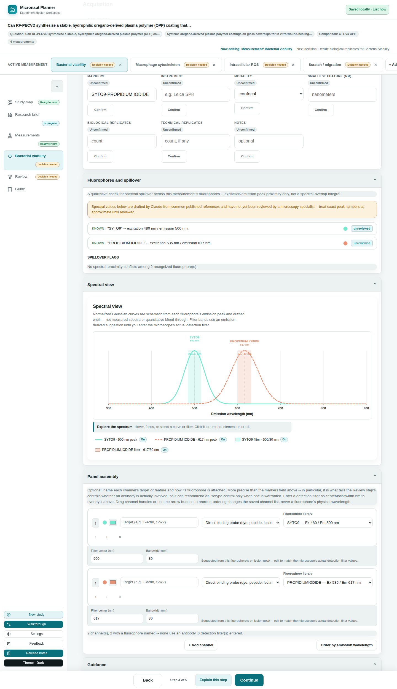

See it in action
A few screens from the shipped example study (the oregano-coating wound-healing plan you can open from Study map).



0.18.0 closes a gap in project-file imports -- a file already at the current schema version used to reach the app unchecked, now it's always validated -- and gives you two ways to recover storage space from inside the app instead of a dead end. Under the hood, 72 of the spectral pack's 157 fluorophores were checked against their cited sources instead of just drafted, and the Release notes link now works from the built single-file app, not only the hosted site.
What 0.18.0 changes.
A file already claiming the current schema version used to skip every migration check and reach the app unchecked. Now every import is shape-validated: unusable files are rejected, recoverable ones are sanitized and you're told what was dropped.
Delete a single saved recovery slot from the Restore menu, or clear all stored data from Settings with a two-click confirm -- both are now what the storage-full message points you to.
Verified exactly against their cited vendor or publication sources, with their own badge and tooltip. The other 85 are still the real, unreviewed target -- the panel banner now says so per panel instead of as a blanket claim.
The Release notes link now resolves when running the single-file build or straight from disk, not only when hosted.
The step rail's "Measurements" label no longer splits mid-word, Review's Study map summary no longer shows a duplicated heading, and a measurement named the same as its own readout no longer echoes itself.
A few screens from the shipped example study (the oregano-coating wound-healing plan you can open from Study map).

ROADMAP.md and TASKS.md track what's being built right now; this page and its changelog track what's actually shipped, by version.
Every version, newest first.
Loading…